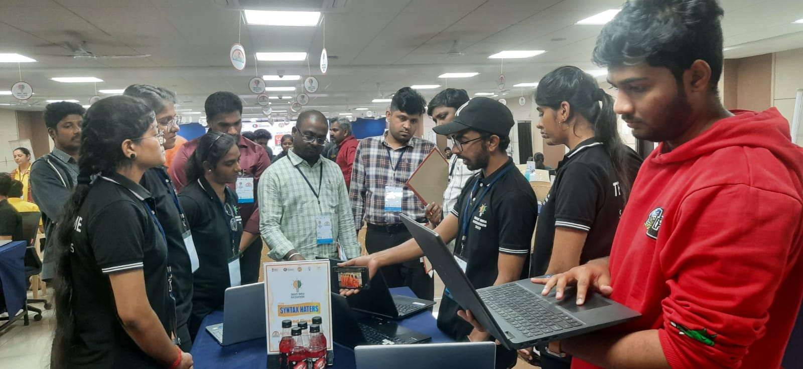
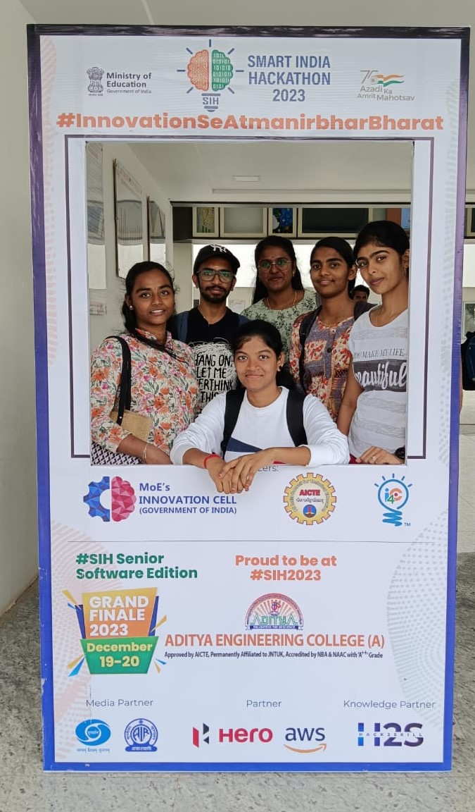
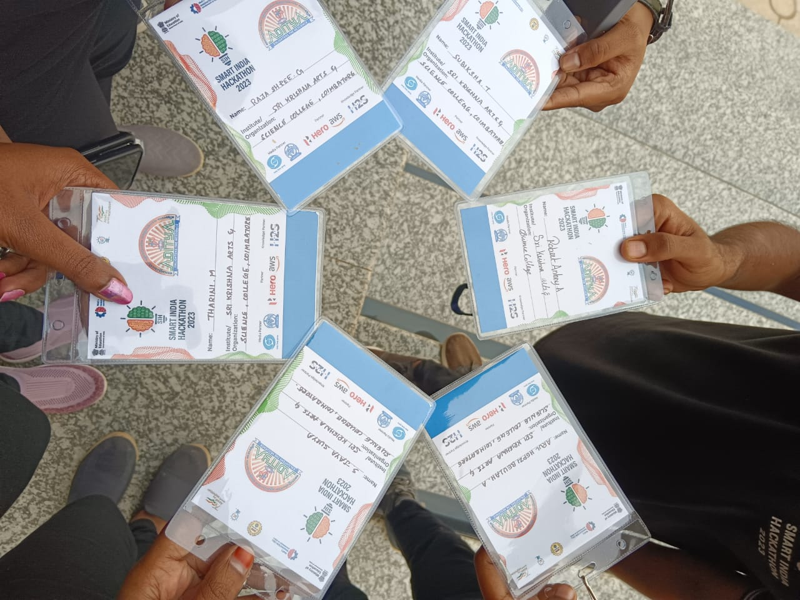

SIH Finals Journey'23
The unexpected Journey always gives a
unforgettable Happiness and Memories
We started our journey from Coimbatore to attend the Smart India Hackathon (SIH) finals. It wasn't a smooth ride;
we faced confusion along the way.Next day morning, we got into the spirit by taking pictures and gearing up for the finals.
Later in the day, we took a break to enjoy some snacks during a leisurely walk.
As night fell, instead of sleeping, we all worked together to prepare for the finals.we were ready for the finals,this wasn't just a journey; it was a testament to friendship, resilience, and the unyielding pursuit of a dream.
The memories created during this journey became a significant part of our shared experience, reminding us that every challenge is a chance to grow and collaborate.
So, the next time you face a hurdle, remember, even the most confusing paths can lead to the most glorious destinations.


